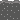
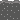

Fairytale-Generator
Large language model
Im zweiten Projekt handelte es sich um Textbasierte KI. (Large language Model) Ein LLM ist ein leistungsstarkes Werkzeug, das menschenähnliche Sprachfähigkeiten besitzt und in vielen Bereichen eingesetzt werden kann. Für unser LLM haben wir Ollama verwendet.
Ollama bietet vorgefertigte Vorlagen und Tools für spezielle Sprachaufgaben, wie Stimmungsanalyse, Textzusammenfassung und das beantworten von Fragen. So können die Sprachmodelle schneller und einfacher für die spezifischen Projekte genutzt werden.
Ollama kann verschiedene Modelle wie Llama2, Llama3 oder Tinyllama ausführen. In diesem Fall Llama3
Die Idee zu diesem Thema war es, eine Website zu entwickeln, die dem Nutzer bei seinen Pflanzen hilft, wenn diese krank werden. Es sollte beschrieben werden, welche Probleme es mit dieser Pflanze gibt und das Programm sollte eine lustige aber hilfreiche Erklärung dazu generieren.
Allerdings wurde festgestellt, dass dieses Projket zu umfangreich und zeitaufwendig gewesen wäre, da enorm viel Input erforderlich gewesen wäre, was auch die Kapazität vom LLM überstiegen hätte. Daher fiel die Entscheidung auf einen World-Generator. Dafür wurden in Adobe Illustrator SVG's entwickelt.
SVGs (Scalable Vector Graphics) sind eine Art von Grafikformat, das verwendet wird, um zweidimensionale Vektorgrafiken darzustellen.
Hier ein paar Beispiele:
 __
__
 __
__
__
__
__
__
Mit diesen Grafiken sollte Ollama dann eine zufällige Welt generieren. Da dies aber auch nicht richtig funktioniert hat, weil die KI die Welten durcheinander geworfen hat, fiel der Entschluss, dass vorgefertigte Welten in den Code eingebaut werden, aber die jeweiligen Welten dann zufällig generiert werden und dazu ein Märchen mit den Eigenschaften dieser Welt geschrieben wird.
Da zu Beginn keine richtige Vorstellung von einem LLM vorhanden war, wurde das Vorhaben und auch die Fähigkeiten von Ollama überschätzt. Trotz der Hindernisse und der begrenzten Möglichkeiten gefiel das Endprojekt von allen Ideen am besten. Es war beeindruckend, dass das LLM die SVG's exakt aufgegriffen und verstanden hat und daraus dann ein (mehr oder weniger) schlüssiges kurzes Märchen wurde.
Vermutlich würde am Kern der Idee nicht viel geändert werden. Der Code könnte jedoch um einige Welten erweitert werden, für noch mehr Vielfalt. Besonders viel Spaß machte das Entwerfen der SVG's. Es mussten sehr kleine, simple Grafiken erstellt werden, die wie ein Puzzle zusammenhängen, aber auch alleine stehen können. Dazu die Schwierigkeit, dass es trotz der versimpelten Darstellung alles erkennbar sein muss. Diese Herausforderung was besonders spannend. Hier geht es zur Website: